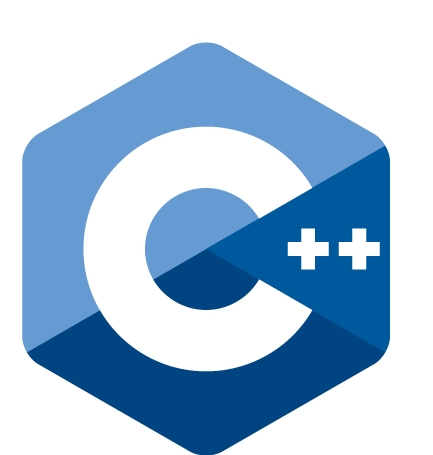

Jeroen Peeters
Software Engineer
Software Engineer
Innovation & Quality Team



Overview
Intro to Docker
Ecosystem
Application Composition
Containers as Tool
Docker & ICTU
Intro to Docker
Build, Ship and Run
Any App, Anywhere
Images
Containers


Build
Run
Link
Volume
UnionFS
pid namespace
net namespace
mnt namespace
Hello world
docker run ubuntu:14.04 /bin/echo 'Hello world'Hello world interactive
docker run -t -i ubuntu:14.04 /bin/bashHello world detached
docker run -d ubuntu:14.04 /bin/sh -c \
"while true; do echo hello world; sleep 1; done"Jenkins
docker run -p 8080:8080 jenkins
FROM java:openjdk-7u65-jdk
RUN apt-get update && apt-get install -y wget git curl zip && rm -rf /var/lib/apt/lists/*
ENV JENKINS_HOME /var/jenkins_home
# Jenkins is ran with user `jenkins`, uid = 1000
# If you bind mount a volume from host/vloume from a data container,
# ensure you use same uid
RUN useradd -d "$JENKINS_HOME" -u 1000 -m -s /bin/bash jenkins
# Jenkins home directoy is a volume, so configuration and build history
# can be persisted and survive image upgrades
VOLUME /var/jenkins_home
# `/usr/share/jenkins/ref/` contains all reference configuration we want
# to set on a fresh new installation. Use it to bundle additional plugins
# or config file with your custom jenkins Docker image.
RUN mkdir -p /usr/share/jenkins/ref/init.groovy.d
COPY init.groovy /usr/share/jenkins/ref/init.groovy.d/tcp-slave-agent-port.groovy
ENV JENKINS_VERSION 1.596.2
# could use ADD but this one does not check Last-Modified header
# see https://github.com/docker/docker/issues/8331
RUN curl -L http://mirrors.jenkins-ci.org/war-stable/$JENKINS_VERSION/jenkins.war -o /usr/share/jenkins/jenkins.war
ENV JENKINS_UC https://updates.jenkins-ci.org
RUN chown -R jenkins "$JENKINS_HOME" /usr/share/jenkins/ref
# for main web interface:
EXPOSE 8080
# will be used by attached slave agents:
EXPOSE 50000
USER jenkins
COPY jenkins.sh /usr/local/bin/jenkins.sh
FROM eboraas/debian:stable
MAINTAINER Ed Boraas <ed@boraas.ca>
RUN apt-get update && apt-get -y install apache2 && apt-get clean
ENV APACHE_RUN_USER www-data
ENV APACHE_RUN_GROUP www-data
ENV APACHE_LOG_DIR /var/log/apache2
RUN /bin/ln -sf ../sites-available/default-ssl /etc/apache2/sites-enabled/001-default-ssl
RUN /bin/ln -sf ../mods-available/ssl.conf /etc/apache2/mods-enabled/
RUN /bin/ln -sf ../mods-available/ssl.load /etc/apache2/mods-enabled/
EXPOSE 80
EXPOSE 443
CMD ["/usr/sbin/apache2ctl", "-D", "FOREGROUND"]
FROM debian:wheezy
# add our user and group first to make sure their IDs get assigned consistently, regardless of whatever dependencies get added
RUN groupadd -r mysql && useradd -r -g mysql mysql
# FATAL ERROR: please install the following Perl modules before executing /usr/local/mysql/scripts/mysql_install_db:
# File::Basename
# File::Copy
# Sys::Hostname
# Data::Dumper
RUN apt-get update && apt-get install -y perl --no-install-recommends && rm -rf /var/lib/apt/lists/*
# mysqld: error while loading shared libraries: libaio.so.1: cannot open shared object file: No such file or directory
RUN apt-get update && apt-get install -y libaio1 && rm -rf /var/lib/apt/lists/*
# gpg: key 5072E1F5: public key "MySQL Release Engineering <mysql-build@oss.oracle.com>" imported
RUN gpg --keyserver pool.sks-keyservers.net --recv-keys A4A9406876FCBD3C456770C88C718D3B5072E1F5
ENV MYSQL_MAJOR 5.5
ENV MYSQL_VERSION 5.5.43
# note: we're pulling the *.asc file from mysql.he.net instead of dev.mysql.com because the official mirror 404s that file for whatever reason - maybe it's at a different path?
RUN apt-get update && apt-get install -y curl --no-install-recommends && rm -rf /var/lib/apt/lists/* \
&& curl -SL "http://dev.mysql.com/get/Downloads/MySQL-$MYSQL_MAJOR/mysql-$MYSQL_VERSION-linux2.6-x86_64.tar.gz" -o mysql.tar.gz \
&& curl -SL "http://mysql.he.net/Downloads/MySQL-$MYSQL_MAJOR/mysql-$MYSQL_VERSION-linux2.6-x86_64.tar.gz.asc" -o mysql.tar.gz.asc \
&& apt-get purge -y --auto-remove curl \
&& gpg --verify mysql.tar.gz.asc \
&& mkdir /usr/local/mysql \
&& tar -xzf mysql.tar.gz -C /usr/local/mysql --strip-components=1 \
&& rm mysql.tar.gz* \
&& rm -rf /usr/local/mysql/mysql-test /usr/local/mysql/sql-bench \
&& rm -rf /usr/local/mysql/bin/*-debug /usr/local/mysql/bin/*_embedded \
&& find /usr/local/mysql -type f -name "*.a" -delete \
&& apt-get update && apt-get install -y binutils && rm -rf /var/lib/apt/lists/* \
&& { find /usr/local/mysql -type f -executable -exec strip --strip-all '{}' + || true; } \
&& apt-get purge -y --auto-remove binutils
ENV PATH $PATH:/usr/local/mysql/bin:/usr/local/mysql/scripts
# replicate some of the way the APT package configuration works
# this is only for 5.5 since it doesn't have an APT repo, and will go away when 5.5 does
RUN mkdir -p /etc/mysql/conf.d \
&& { \
echo '[mysqld]'; \
echo '!includedir /etc/mysql/conf.d/'; \
} > /etc/mysql/my.cnf \
&& { \
echo '[mysqld]'; \
echo 'user = mysql'; \
echo 'datadir = /var/lib/mysql'; \
} > /etc/mysql/conf.d/docker.cnf
VOLUME /var/lib/mysql
COPY docker-entrypoint.sh /entrypoint.sh
ENTRYPOINT ["/entrypoint.sh"]
EXPOSE 3306
CMD ["mysqld"]
Ecosystem
Docker Hub

hub.docker.com
- Compose
- Machine
- Swarm
Fleet by
Flannel


Apache Marathon


Application Composition
Manual
docker run --name my-mysql -e MYSQL_ROOT_PASSWORD=rootpw -d \
-v "$PWD/wp-data":/var/lib/mysql mysql:5.5
docker run --name my-wordpress --link my-mysql:mysql -d -p 80:80 wordpress
Application Composition
Docker Compose
web:
image: myregistry/mywebapp:1.0
links:
- db
ports:
- "8000:8000"
db:
image: postgres
web:
image: myregistry/mywebapp:1.0
volumes_from:
- ftp
ftp:
image: stilliard/pure-ftpd
volumes:
- /share/ftphome
Container as a Tool
Maven
Without Docker
mvn archetype:generate -DgroupId=nl.ovs.demo \
-DartifactId=demoapp \
-DarchetypeArtifactId=maven-archetype-quickstart \
-DinteractiveMode=false
Maven
Dockerized
docker run -it --rm --name my-maven-project \
-v "$PWD":/usr/src/mymaven \
-w /usr/src/mymaven \
maven:3.2-jdk-7 \
mvn archetype:generate -DgroupId=nl.ovs.demo \
-DartifactId=demoapp \
-DarchetypeArtifactId=maven-archetype-quickstart \
-DinteractiveMode=false
Maven
Install
docker run -it --rm --name my-maven-project \
-v "$PWD":/usr/src/mymaven \
-w /usr/src/mymaven \
maven:3.2-jdk-7 \
mvn clean install
Docker @ ICTU
Hoe het begon

Met Docker

Tooling

Met Docker

Docker as a Service
Discovery as a Service
- DNS entry per container
Application as a Service
- Application = { gelinkte containers }
- Dashboard voor Starten/Stoppen
- API voor applicatie creatie
Demo
 |
jeroen@peetersweb.nl |
| jeroenpeeters | |
 |
jeroenpeeters |
 |
jeroenp |
 |
jeroenpeeters.nl |